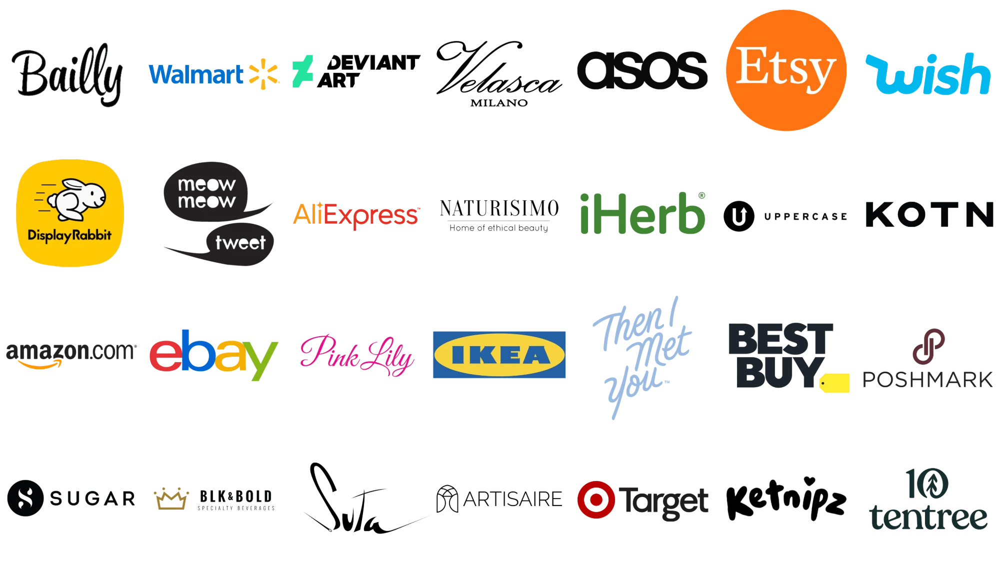
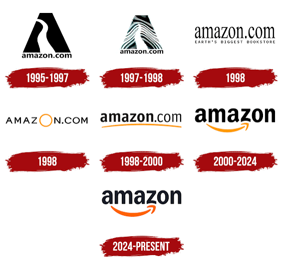
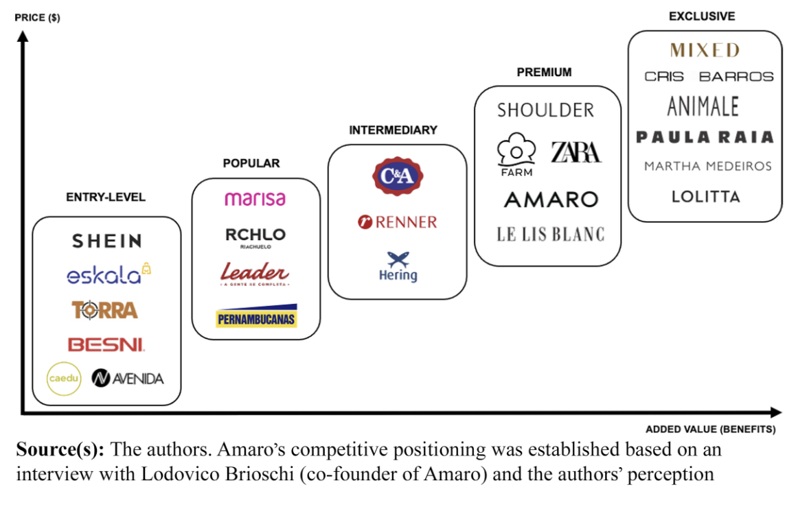
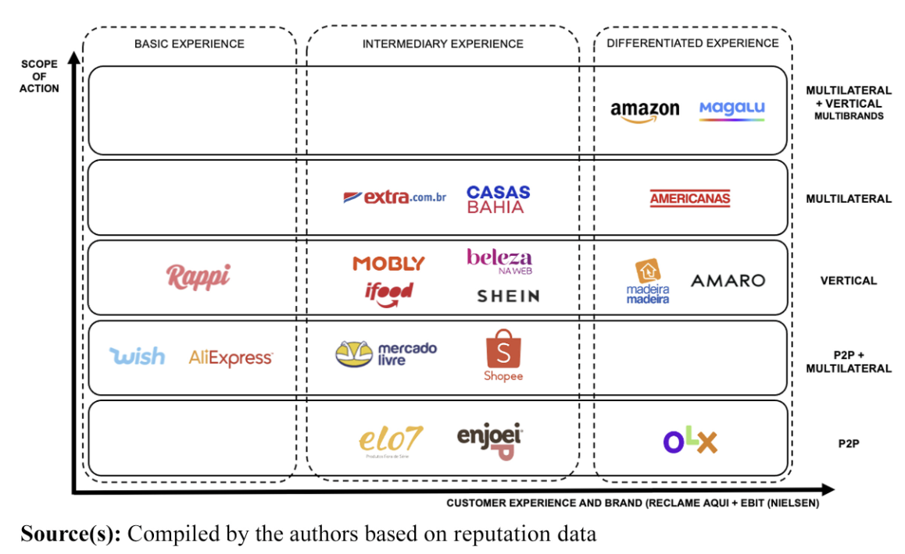
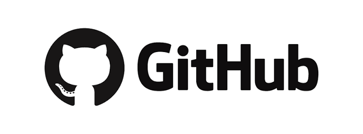
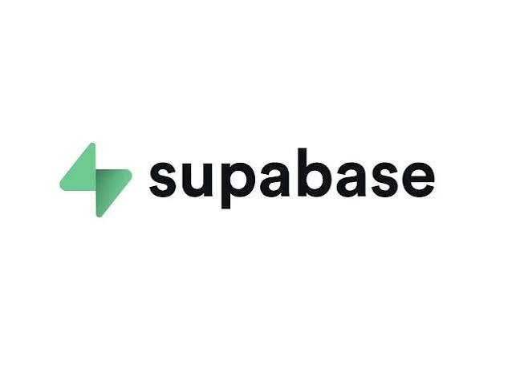

Information Systems · E-commerce module · Hands-on
Build your own online shop
See how selling online grew from dot-com bookstores to AI shopping agents. Then build and launch your own shop that takes card payments, holds one-of-a-kind stock and records every order. Test money only: nothing is ever charged.
Shop · Payments · Data
This is an Information Systems (IS) learning module for business students. It is hands-on and learn-by-building: you follow one small business example, build a working online shop with real tools in test mode, and use it to see how information systems help a business sell, and where they create risk.
Watch first · Module introduction · 2:22
The Hidden Labyrinth of E-commerce
What really happens behind a single “Buy now” click? Start with this short video, then explore how the module unpacks it.
Video created by the module author.
Orientation
How this module works
Three parts · about 5–6 hours
Learn the story, build the shop, then see what it takes to go live
Part 1 explains how e-commerce developed, from the dot-com era to AI, and how online businesses make money, then applies it to a real teaching case. About 1½–2 hours.
Part 2 walks you through building your own shop with an AI assistant, Stripe, Supabase and Vercel. About 2–2½ hours, depending on your experience.
Part 3 explains what it takes to turn your class project into a real business, and ends with your own short business case. About 1½ hours.
Suggested sessions: (1) Part 1 · (2) Part 2, in one sitting or split after Stage 4 · (3) Part 3. Times are estimates; optional videos are extra.
Each stage ends with a short check. Answer it correctly to unlock the next stage. Checks are unmarked and you can retry. Your progress is saved in this browser only.
Where this applies: prices, taxes and laws in this module are Australian (AUD, GST, the ABN, the ACCC and the Spam Act). If you are elsewhere, the ideas are the same, but check the equivalent rules where you live.
Almost every business now sells, buys or markets online, whether it is a corner café, a global retailer or a government service. As a business graduate you may never write code, but you will decide which tools to buy, brief the people who build them, judge what they cost and answer for what goes wrong. You can only do that well if you understand how online selling actually works.
This module gives you that understanding by having you build a real (test) shop yourself, then step back and ask why each part works the way it does.
1
Understand
See how e-commerce developed, and why each change created new business models and new winners.
2
Build
Use an AI assistant to create a working shop, so the technology is no longer a black box.
3
Judge
Weigh up costs, risks, rules and customer trust, the decisions businesses make every day.
Learning outcomes
By the end of this module, you will be able to:
LO1
Explain how e-commerce has evolved from the dot-com era to AI-enabled commerce, and what each stage made possible for businesses.
Understand Part 1
LO2
Classify e-commerce businesses by who trades with whom, where they sell and how they make money, and compare the value and risks of different business models, including in a real business case.
Analyse Part 1 · AMARO teaching case · Part 3 business case
LO3
Describe the information systems behind an online sale (storefront, payment platform, database, hosting and webhooks) and trace how data flows between them.
Understand Part 1 payments · Part 2
LO4
Build and test a working online shop in a test environment, using an AI assistant and cloud services.
Apply · Create Part 2
LO5
Analyse how the design of an online shop's systems controls business risks such as price tampering, overselling, fraud and lost orders.
Analyse Part 2
LO6
Evaluate what it takes to run an online shop as a real business, including costs, customer acquisition, fulfilment, legal obligations and ethics.
Evaluate Part 3
LO7
Justify when and how a business should use AI assistants and agents, including the controls needed to use them safely.
Evaluate Part 1 AI · Part 2 · AI tools recap
Running example: throughout the module we follow Uni Textbook Swap, a small shop selling second-hand textbooks. Every book is one of a kind, which makes the shop simple to start but interesting to build. You choose your own idea in Part 2.
What's in it for me? E-commerce in your business studies at University
Find your major. What would you be responsible for?
The same online sale raises very different questions depending on what you study. Find your area below: each card shows where e-commerce meets your field, and a question someone in that role might need to answer.
Accounting, Auditing & Taxation
Every sale leaves a record
Each online order creates records: revenue, GST, payment fees, refunds and changes to inventory. Payouts arrive days later, minus fees, so they must be matched to the orders behind them. Together, these records form the audit trail that shows what really happened.
Your question
“If a customer buys a $100 product, then receives a partial refund two weeks later, how should that transaction be recorded?”
Behind every online payment sit banks: the customer’s bank approves it, the seller’s bank receives it, and lenders fund services such as buy now, pay later. Finance also asks what an online business is worth, and whether fast growth will ever turn into profit.
Your question
“Should a bank lend money to a fast-growing online retailer that has never made a profit?”
Online businesses depend on payment gateways, card networks, digital wallets and fraud controls. Every payment method carries a fee and a delay, which shape cash flow and margins. Choosing how customers pay is a financial decision, not just a technical one.
Your question
“What happens between clicking ‘Pay’ and the money actually reaching the seller?”
E-commerce cuts search costs: customers can compare prices in seconds, so competition intensifies. Yet people don’t always choose the cheapest option. Trust, convenience, reviews, defaults and how choices are presented all shape what they buy.
Your question
“Why might a customer buy a product for $80 on one website when an identical product is available elsewhere for $70?”
A single purchase relies on a website, a database, APIs, a payment gateway, inventory records and cloud hosting all working together. If one link fails, the sale fails. You build exactly this chain in Part 2.
Your question
“What systems have to communicate successfully for a single online purchase to work?”
Running an online business means setting policies for privacy, refunds and security, deciding who may access which systems, and answering for the outcome when something goes wrong. Governance now includes new questions, such as which decisions staff or AI agents may make without approval.
Your question
“Who in the business should be accountable when a data breach exposes customers’ details?”
Firms attract customers through search, social media and digital advertising, then personalise what each person sees. Because every campaign can be measured from click to purchase, marketers must show what each customer costs and what they return.
Your question
“Which customer is actually worth paying to acquire?”
Every visit, search, abandoned cart, purchase, refund and repeat visit generates data. Analysts turn it into funnels and dashboards that show where customers drop out, and what to fix first.
Your question
“If 1,000 people visit the store but only 20 buy something, where are the other 980 being lost?”
Building the store is only part of the challenge. A business must decide its value proposition, target customer and revenue model, and whether to operate as a retailer, marketplace, platform or subscription business.
Your question
“Should Uni Textbook Swap buy and resell books itself, or simply connect buyers and sellers as a marketplace?”
E-commerce puts international customers one click away. But each country brings different currencies, payment methods, taxes, shipping costs, consumer laws and cultural expectations.
Your question
“If an Australian online business suddenly receives orders from the US and Singapore, should it accept them?”
E-commerce systems hold customer identities, passwords, payment events and transaction data, which makes them attractive targets. Controls such as checking prices on the server and verifying payment messages are central to the business, not an add-on.
Your question
“What would happen if someone manipulated a transaction so that a $100 product was sent to the payment system as $10?”
AI already powers recommendations, search, customer service, fraud detection, content creation and even shopping agents. The key managerial question is shifting from whether AI can do a task to what it should be allowed to do on its own.
Your question
“Should an AI customer-service agent be allowed to approve a $200 refund without a human?”
E-commerce can support reuse and circular consumption, as a second-hand textbook shop does. But packaging, delivery, returns and data centres all carry environmental costs.
Your question
“Is buying a second-hand textbook online necessarily more sustainable once packaging and delivery are considered?”
Fraud, cyber attacks, chargebacks, returns, delivery failures, demand swings and system outages can all stop an order being completed. Risk specialists estimate how likely and how costly each one is, and whether a control is worth its cost.
Your question
“What risks could prevent an online retailer from successfully completing a customer order?”
A single e-commerce transaction involves marketing, banking and finance, accounting, analytics, information systems, cybersecurity, strategy, management and operations, all at the same time. E-commerce isn’t just an IT topic: every business discipline has a part in making one sale work.
The idea for this section is adapted from the “What’s in IT for me?” sections of Rainer and Prince (2021).
Part 1
From dot-com to AI: thirty years of selling online
Each era made selling online easier, and each left behind ideas your own shop will use.
Listen first · Part 1 introduction · 1:33
How technology rewrites the rules of e-commerce
Thirty years in one line
Spaced by year. The two yellow points are what this module builds on: payments you add with code, and AI.
What will you learn?
Purpose: understand how selling online developed, so you can see why today's tools work the way they do.
Key ideas: e-commerce and e-business, who sells to whom, business models, the dot-com era, Web 2.0, showrooming and middlemen, how a card payment works, AI in e-commerce, and a real teaching case (AMARO).
By the end: you can explain how an online business makes money, what each era made easier for a small business, and what new questions AI raises.
Learning outcomes: LO1 and LO2 (applied in the AMARO teaching case), and an introduction to LO3 and LO7.
About 1½–2 hours, including the teaching case, plus three optional videos.
Running example
Imagine selling second-hand textbooks online. In 1997 you would need a bank's permission to take cards and weeks of setup. By 2011 a few lines of code would do it. Today an AI assistant can build the whole shop with you. Part 1 explains how that changed.
Before the history, here are the words this module uses most. The definitions of e-commerce and e-business follow Rainer and Prince (2021).
E-commerceBuying and selling goods or services over the internet. The shop you build in Part 2 is e-commerce.
E-businessRunning any part of a business online: selling, but also suppliers, stock, payments, marketing and customer service. E-commerce is one part of e-business.
Online shopA website where customers choose items, pay and arrange delivery. Also called an online store or web store.
Physical, online or both?
Businesses also differ in where they sell. Three terms describe this (Rainer & Prince, 2021):
Brick-and-mortarA business that sells only from physical premises, such as a market stall or a traditional shop.
Pure-play (virtual)A business that sells only online, with no shop for customers to visit. Uni Textbook Swap is pure-play.
Clicks-and-mortarA business that sells both in physical shops and online, such as a supermarket with home delivery.
A second question is how much of the sale is digital. When the product, the payment and the delivery are all online (an e-book you download), it is pure e-commerce. When some of it is physical (a printed book that is posted out), it is partial e-commerce. Uni Textbook Swap sells online but still needs a post office, which is why delivery matters so much (Rainer & Prince, 2021).
Sort these textbook sellers
Try it
Where does each one sell? Pick an answer for each.
The campus bookshopHas a counter on campus, plus a website for click and collect
Uni Textbook SwapA website only, posting printed books to buyers
A used-book stall at the market dayCash only, no website or social media
An e-textbook subscriptionPay monthly, read every book in an app
E-commerce is more than the shop. Every online sale relies on four kinds of supporting business, each explained below.
Behind every online sale
E-commerce is more than a shop page. Every online sale relies on a set of supporting businesses, and many careers sit in these areas rather than in the shop itself.
1
Supply chain management
Getting the right stock from suppliers at the right time and price. For Uni Textbook Swap, that means buying used books from students at the end of each semester.
2
Fulfilment
Storing, packing and posting orders, and handling returns. Large retailers run huge warehouses; a small shop might use a spare room and the local post office.
3
Payment processing
Taking the customer's money safely and passing it to the business. In Part 2, Stripe does this for your shop.
4
Software
The shop itself, the database and the hosting. In Part 2 you use GitHub, Supabase and Vercel, with an AI assistant writing the code.
Who sells to whom?
Story · one textbook, three journeys
At the end of first year, Priya has a used copy of Principles of Economics. Priya could list it on eBay and sell it straight to another student. Or sell it to Uni Textbook Swap, which checks it, cleans it up and sells it on to a new student at a higher price. Meanwhile, the campus bookshop orders brand-new copies in bulk from the publisher. Same book, three business models, each with different customers, prices, risks and ways of making money.
B2B
Business to business
Publisherbusiness
↓ sells boxes of new books
Campus bookshopbusiness
How money is made: large orders, agreed prices, ongoing contracts.
B2C
Business to consumer
Uni Textbook Swapbusiness
↓ sells one book
Studentconsumer
How money is made: buy low, sell higher. The margin pays for checking, listing and posting books.
C2C
Consumer to consumer
Priyaconsumer
↓ through a platform
eBayplatform
↓
Another studentconsumer
How money is made: the platform keeps a fee on each sale.
Type
Meaning
Example
B2C
Business to consumer
An online shop selling to the public, like Uni Textbook Swap
B2B
Business to business
A wholesaler selling stock to shops
C2C
Consumer to consumer
People selling to each other on a marketplace such as eBay
B2E
Business to employee
A company's online portal where staff do training, see payslips or buy discounted products
G2C and G2B
Government to citizen, government to business (e-government)
Paying a fine or lodging a tax return online; a business registering an ABN or bidding for a government contract
Mobile commerce (m-commerce) is not a separate type: it describes any of these done on a phone, and it is now how most people shop online. The B2E and e-government types are described in Rainer and Prince (2021).
Why this matters to you
Knowing who sells to whom tells you how a business makes money and what it must get right. A B2C shop lives or dies on marketing, trust and delivery. A B2B supplier depends on contracts, volume and long relationships. A C2C platform earns fees and must keep buyers and sellers safe from each other.
Analysts, consultants, marketers and founders all start here when they size up a business. You will use this question in strategy, marketing and case-study work throughout your degree.

E-commerce today ranges from global giants to small online brands. Try this: pick five logos and decide whether each is mainly a retailer, a marketplace (platform) or a brand selling its own products directly. Image: Logos-World. Logos are trademarks of their owners and are shown for teaching.Marketplaces, retailers and two more models
Retailer or marketplace? A retailer buys stock and sells it, so it carries the risk if items don't sell. A marketplace lets other people sell and takes a commission, so it holds no stock. Some businesses, such as Amazon, do both.
D2C (direct to consumer): a brand selling its own products straight to customers online, with no shop in between. Many clothing and beauty brands work this way.
B2G (business to government): businesses selling to government departments, usually through formal tenders.
Pause and check
Uni Textbook Swap sells second-hand textbooks to students. Which type of e-commerce is it?
How online businesses make money About 12 min
Story · four ways to earn
Alex has built Uni Textbook Swap and students are using it. A friend asks the obvious question: “But how do you actually make money?” Alex could buy books cheaply and resell them. Or let students sell to each other and take a cut. Or charge a small fee each semester. Or earn a commission by pointing students to new copies elsewhere. The website could look almost identical in all four cases, but the business would be completely different.
A business model is how a business creates value for customers and earns money from it. The part about earning money is sometimes called the revenue model. The internet made several new models possible, or made old ones far cheaper to run. These are the ones you will meet most often, drawn mainly from Rainer and Prince’s (2021) table of e-commerce business models, with advertising added.
$
Online direct selling
Buy or make products and sell them straight to customers online. You keep the margin but carry the risk of stock that doesn't sell. Examples: most online shops, and brands selling direct.
%
Marketplace commission
Let others sell and keep a percentage of each sale. No stock, but you need enough buyers and sellers. Examples: eBay, Etsy, Airbnb.
↻
Membership or subscription
Customers pay a regular fee for access or benefits. Income is predictable, but members must keep seeing value. Examples: Amazon Prime, streaming services.
→
Affiliate marketing
Send customers to another business and earn a commission when they buy. Very little effort, but very little control. Examples: review sites and influencers with shopping links.
⇅
Auctions and reverse auctions
In an auction, buyers bid the price up. In a reverse auction, a buyer describes what it needs and sellers bid the price down. Governments and large firms use reverse auctions, called tenders. Examples: eBay auctions, government tenders.
⌂
Group buying and deep discounts
Pool many buyers to win a bulk discount, or sell at very low prices on high volume. Margins are thin, so costs must be tightly controlled. Examples: group-deal sites, discount retailers.
✎
Product customisation
Customers design their own version online, such as shoes in their own colours, and pay more for it. Examples: custom sneakers, printed T-shirts.
◎
Advertising
The service is free to users, and advertisers pay to reach them. It works only with a very large audience. Examples: search engines and social media.
Choose a money model for Uni Textbook Swap
Try it
Numbers are rough examples to show the shape of each model, not real figures. Many real businesses combine models. Amazon is a retailer, a marketplace, a membership (Prime) and an advertising business at once.
Why this matters to you
The business model decides almost everything else: who your customer really is, what you must be good at, where the risk sits and how fast you can grow. Two websites that look the same can have opposite strengths. When you analyse a company in a case study, a pitch or a job interview, “How does it make money, and what could break that?” is usually the first question to ask.
Don't forget B2B
~85%
Most e-commerce is invisible to shoppers. Rainer and Prince (2021) estimate that business-to-business (B2B) trade makes up about 85% of e-commerce by value. When you picture e-commerce you probably think of Amazon, but most of the money moves between businesses ordering supplies, parts and stock from each other.
Inside B2B: how the campus bookshop buys its stock
Story: in January, the campus bookshop needs 400 copies of a first-year economics text. Nobody phones anyone. The buyer logs in to the publisher's online ordering site, checks the bookshop's agreed price and places the order.
Sell-side: the publisher runs its own site where business customers order. This is the publisher selling online.
Buy-side (e-procurement): the university buys everything from lab gloves to laptops through its own online purchasing system, with approved suppliers and spending limits built in.
Reverse auction (tender): to choose a printing supplier, the university describes what it needs and suppliers bid. Prices go down as they compete, the reverse of an eBay auction.
Group purchasing: several university bookshops combine their orders to get a bigger discount.
Exchanges: online marketplaces where many businesses buy and sell. Some serve one industry, such as building materials. Others sell things every business needs, such as office supplies.
These B2B approaches are adapted from Rainer and Prince (2021).
More models, and the “shopfronts” they run on
Name your own price: the customer says what they will pay, such as for a hotel room, and the seller accepts or declines. Find the best price: a site searches many sellers and shows the cheapest; comparison sites earn fees from the sellers. Viral marketing: customers spread the word for you, often rewarded with a referral credit. Bartering: swapping goods without money, such as a textbook swap with no cash at all.
Where these models run: an electronic storefront is one business's own online shop. An e-mall groups many shops under one address. An e-marketplace is a central online space where many buyers and sellers trade, such as eBay. An electronic catalogue is the searchable list of products, prices and photos inside any of these. The shop you build in Part 2 is a storefront with a very small catalogue. Models and mechanisms adapted from Rainer and Prince (2021).
Pause and check
Uni Textbook Swap changes so that students list their own books, and the site keeps 10% of each sale. Which model is that?
1995–2001: the dot-com era About 12 min · plus optional video
Story · 1996
You want a book your local shop doesn't stock. The shop can order it in, which takes two weeks. Or you can try a new website that claims to have a million titles. You type your card number into a website for the first time, nervously, and wait. The book arrives. Next time you don't hesitate. Multiply that by millions of people and you have the start of e-commerce: trust, built one delivery at a time.
In the mid-1990s, businesses began opening shops on the World Wide Web. Amazon started in 1995 as an online bookstore. It could list millions of books, far more than any physical shop could hold. eBay started the same year as an online auction site, where ordinary people sold to each other (C2C).
Investors rushed to fund almost any company with “.com” in its name, and many had no clear way to make a profit. Share prices fell sharply in 2000–2001 and hundreds of these companies closed. This is called the dot-com crash, or the bursting of the dot-com bubble. Amazon and eBay survived because customers kept using them and they kept improving the shopping experience.
Why selling online took off
Four benefits explain why businesses rushed online, and why they still do.
1
No need for a physical space
There is no shopfront to rent, fit out or staff. Stock can sit in a warehouse, or for a small seller, a spare room. That is how Amazon could offer millions of books when the biggest bookshops held a fraction of that.
2
Flexibility for sellers
An online shop is open all day, every day. Sellers can change prices and products in minutes, start small or part-time, and test new ideas cheaply before committing.
3
Convenience for buyers
Customers can shop at any hour from a phone, compare prices and reviews in seconds, and have items delivered to the door.
4
Limitless reach
A shop is no longer limited to people walking past. It can sell across the country or the world, so even niche products, like a rare edition of a textbook, can find enough buyers.
Each benefit has a trade-off: delivery costs, returns, fierce competition from anywhere, and customers who can't touch the product before buying. Weighing both sides is part of every e-commerce decision.
Websites from this era are now called Web 1.0. They were mostly read-only: the business published pages and customers read them.
Think of it as a printed mail-order catalogue put on a screen. You could browse and order, but you couldn't talk back or see what other shoppers thought.

A logo that tells a strategy
Amazon's early logos sold it as Earth's biggest bookstore. By 2000 the name sat above an orange arrow running from the a to the z: a hint that it now wanted to sell everything, from A to Z.
The change shows a classic strategy: win one category (books) where online selling had a clear advantage, then expand. Image: Logos-World. Logos are trademarks of their owner and are shown for teaching.
Why this matters to you
Hype cycles repeat. The dot-com boom looks a lot like today's excitement about AI: big promises, lots of investment, and many companies with no clear way to make money. Employers want graduates who can look past the hype and ask simple questions. Who pays? What does each sale cost to deliver? Why would customers come back? Those questions separated Amazon from the companies that disappeared.
Pets.com: a famous failure, and why Amazon survived
Pets.com sold pet food and supplies online. It spent heavily on advertising, including a sock-puppet mascot and a Super Bowl advert, and closed in 2000, less than a year after listing on the stock market. Heavy bags of pet food were expensive to post, so it often lost money on each order. The lesson is about unit economics: if every sale loses money, selling more makes things worse.
Amazon also lost money for years, but on purpose: it reinvested in warehouses, range and customer service. It did not make a full-year profit until 2003. The difference was that customers kept coming back and each order could become profitable at scale.
What did selling online let Amazon do that a physical bookshop couldn't?
What did customers have to trust before paying a website?
Why did some dot-com companies survive the crash when so many closed?
Pause and check
Why did so many dot-com companies close in 2000–2001?
2004 onwards: Web 2.0 and new channels About 12 min
Story · the $5 of trust
Two copies of the same textbook are listed online. One costs $40 from a seller with no reviews. The other costs $45 from a seller with 300 five-star ratings. Most people pay the extra $5. That $5 is the value of trust, and in Web 2.0 it was created by customers, not by the business.
Around 2004, people began using the term Web 2.0 for a new kind of website where users create much of the content. Customers wrote reviews, gave star ratings, shared products with friends and sold their own goods. This is called user-generated content.
Shopping sites became platforms: places that connect many buyers and sellers and grow more useful as more people join. Social media (Facebook from 2004, YouTube from 2005) became a major way for shops to find customers.
The same book in two eras. An illustration, not real websites. Web 2.0 adds ratings, reviews written by customers, sharing, and suggestions based on what other shoppers bought.
Why platforms grow so fast
Platforms such as eBay serve two groups at once: buyers and sellers. Each group attracts the other, so growth feeds itself. This loop is called a network effect.
The platform flywheel. Each turn of the loop makes the platform more useful, which is why a few platforms dominate many markets.
When customers compare everything: channels and middlemen
Story · week one, campus bookshop
Jordan is holding a new copy of the economics textbook in the campus bookshop. The price tag says $140. Jordan flicks through it to check it's the right edition, then pulls out a phone and finds a used copy on Uni Textbook Swap for $55. The book goes back on the shelf. The bookshop paid for the shelf, the staff and the lights, and made no sale.
Once shoppers carry the whole internet in their pockets, the line between shop and website blurs. Four terms describe what happens next (Rainer & Prince, 2021):
1
Showrooming
Looking at a product in a physical shop, then buying it cheaper online. Jordan just did it. The reverse, researching online then buying in store, is sometimes called webrooming.
2
Multichannel selling
Selling through several channels at once: a shop, a website, an app and marketplaces. When they work together, such as click and collect or returning online orders in store, it is often called omnichannel.
3
Channel conflict
When a business's own channels compete with each other or with its partners. If a publisher sold textbooks direct to students for less than the campus bookshop pays, the bookshop might stop stocking its books.
4
Disintermediation
Cutting out the middleman. Selling direct removes a step, and its costs, between maker and customer. Travel agents and record shops were hit hard by it.
Traditional route
Publisher→Campus bookshop→Student
Middleman cut out
Publisher→StudentCampus bookshop
A new middleman
Student seller→Uni Textbook Swap→Student buyer
The twist: Uni Textbook Swap takes sales away from the campus bookshop, but it is itself a new middleman, standing between students who could in theory find each other in a group chat. This is called reintermediation. A new middleman survives only if it adds something people value: trust, checked condition, safe payment, or simply saving time.
How shops fight back against showrooming
Price matching: match a competitor's online price on the spot.
Selling online themselves: become clicks-and-mortar, with click and collect so the shop becomes a pickup point.
Things the internet can't do: expert advice, trying before buying, same-day pickup, events.
Exclusive products: stock items that can't be found elsewhere to compare, such as the bookshop's own course readers.
Why this matters to you
Reviews, ratings and social sharing now shape what people buy. Marketers manage online reputation, product teams read reviews for ideas, and strategists ask whether a business has network effects that will be hard for rivals to copy. Retail managers decide how to sell across shops, websites and marketplaces without their channels undercutting each other. These ideas explain why a handful of platforms hold so much power, and why so many traditional middlemen have struggled.
The downside of platforms, and fake reviews
Platform power: once a platform has most of the buyers, sellers may feel they can't leave, even when fees rise or rules change. This is why governments around the world now watch large platforms closely.
Fake reviews: because reviews influence sales, some businesses fake them. In Australia, the ACCC treats fake or misleading reviews as a breach of the Australian Consumer Law.
Pause and check
What made Web 2.0 shops different from Web 1.0 shops?
Taking payments got much easier About 15 min · plus two optional videos
Story · two café owners
In 2005, a café owner who wanted to take orders online faced bank forms, a setup fee, a gateway contract and a developer's quote. Most gave up. In 2015, a café owner could add online ordering through a ready-made service in an afternoon, paying only a small fee on each sale. Lower barriers meant far more small businesses could sell online.
For a long time, the hardest part of selling online was taking card payments. A shop needed a merchant account from a bank (permission to accept card payments) and a payment gateway (software that passes card details securely between the shop and the banks). It also had to meet strict card-security rules called PCI DSS. Setting all this up could take weeks.
PayPal (founded 1998, bought by eBay in 2002) let people pay with just an email address and password. Shopify (2006) let anyone set up a complete shop without coding.
PayPal presents new AI-driven features to speed up checkout for registered users and guests, merchant analytics for personalised offers, revamped cashback rewards, and business profiles on Venmo to help local businesses be discovered.
What should you notice?
How does PayPal use AI to make checkout faster, and why does a faster checkout matter to an online shop?
What would merchants need to know about their customers to make personalised offers, and where does that data come from?
How are cashback rewards and Venmo business profiles meant to bring shoppers back and help local businesses get found?
Stripe launched in 2011 with a different idea: a developer could add payments to any website with a few lines of code. It does this through an API, a set of instructions one piece of software uses to ask another to do something. Stripe handles the bank relationships, card security and fraud checks behind the scenes. That is why you can build a shop that takes payments in an afternoon.
What problem were Stripe's founders trying to solve?
Who were Stripe's first customers: shoppers, or the people building websites?
Why does making payments easier help new businesses start?
Taking card payments, around 2000
Apply to a bank for a merchant account
Wait weeks for approval
Buy and connect a payment gateway
Meet the card-security rules yourself
Build your own checkout page
Taking card payments with Stripe, today
Sign up and verify your business
Copy your keys into your website's settings
Send customers to Stripe's ready-made payment page
Stripe handles card security and fraud checks
Test it all first with fake cards
New ways to pay keep arriving. Mobile commerce means shopping on phones. Tap-to-pay wallets such as Apple Pay arrived in 2014. Buy now, pay later services such as Afterpay (founded in Australia in 2014), Klarna and Zip let customers pay in instalments. You will see some of these offered on Stripe's payment page in Part 2; Stripe adds them for you.
What happens after you tap Pay?
Step through
One $54.95 textbook order, followed through the nine steps of an online card payment, adapted from Rainer and Prince’s (2021) diagram of how e-credit cards work. Step through to see who does what.
Steps 1–5: about 2 secondsStep 6: seconds laterSteps 7–9: days later
Customer taps Pay on Stripe's checkout pageCustomer
Stripe sends the payment request into the card networkStripe (payment processor)
The card network routes it to the customer's bankVisa or Mastercard
The customer's bank checks and approvesCustomer's bank (issuer)
The answer travels back and the customer sees “Payment successful”Stripe
Stripe tells the shop's server, which records the orderYour shop
The banks settle and the money movesBanks and card network
Stripe pays the shop, minus its feeStripe → shop's bank
The charge appears on the customer's statementCustomer's bank
Simplified. Real payments can include extra checks, such as a one-time code sent to the customer's phone. Stripe handles every step except step 6, which your own code does.
Other ways customers pay
Cards are only one option. A good checkout offers the ways your customers prefer to pay, and each one has a different cost and level of risk for the shop. Payment types adapted from Rainer and Prince (2021).
▭
Credit and debit cards
Still the most common way to pay online. The shop pays a percentage fee on each payment and carries the risk of chargebacks.
◫
Digital wallets
Apple Pay and Google Pay store a card on the phone and send a one-time code instead of the card number. They're faster and safer, so fewer customers give up at checkout.
⇄
Person-to-person payments
Paying another person directly, by PayID, bank transfer or PayPal. Common in C2C sales, but scammers use them too, because the money is hard to get back.
▣
Stored-value and gift cards
Money loaded in advance onto a card, such as a gift card or a transport card. Shops like gift cards because the money arrives before anything is sold.
÷
Buy now, pay later
The customer pays in instalments; the shop is paid in full straight away but pays a higher fee. Some shops find customers spend more.
#
Business and virtual cards
Companies give staff purchasing cards with spending limits for B2B buying. Virtual cards are card numbers that work for one purchase or one shop, so a leak does little damage.
Why this matters to you
Payments are where a sale is won or lost. A slow, confusing or untrusted checkout makes shoppers abandon their carts. Every payment also carries a fee, which comes straight out of the profit on each sale. Choosing how customers pay, which provider to use and whether to offer buy now, pay later is a business decision about trust, conversion and margin, not just a technical one.
Buy now, pay later: the shop's side of the deal
Buy now, pay later usually costs the shop more per sale than a card payment, but some shops find customers spend more. Australia began regulating buy now, pay later as a form of credit in 2025.
For the shop, the question is simple arithmetic: does the extra spending outweigh the extra fee? For society, the question is harder: does making it easy to spend money you don't have help or harm young customers?
Pause and check
What problem did Stripe solve for small businesses?
Now: AI is changing e-commerce About 10 min
Story · the shopper who never visits
A student types into an AI assistant: “Find me a used copy of Principles of Economics, 9th edition, under $60, delivered by Friday.” The assistant searches, compares and offers to buy one. The student never visits a shop's website. If you ran Uni Textbook Swap, would the assistant find you? Would it trust your descriptions? And who is responsible if it buys the wrong edition?
What that conversation might look like
Illustration
AI shopping assistant
StudentFind me a used copy of Principles of Economics, 9th edition, under $60, delivered by Friday.
AI assistantI found three listings. Only one meets all three of your conditions.
Campus Reads$529th ed. · well used✕ Arrives Monday, after Friday
BookNook$358th ed. · good✕ Wrong edition
Uni Textbook Swap$589th ed. · like new · ★ 4.8✓ Edition, price and delivery all match
AI assistantBuy from Uni Textbook Swap for $67.95, including $9.95 shipping, with your saved card?
BuyNot yet
An illustration with made-up shops. Notice what the assistant needed from each listing: the exact edition, the condition, the price and a delivery date. A shop with vague listings would never be chosen. Notice too that the student still has to say yes.
Artificial intelligence (AI) means computer systems that do tasks which normally need human judgement. Online shops have used one kind of AI, machine learning (software that learns patterns from data), for more than twenty years. Since ChatGPT arrived in 2022, generative AI, which writes text, images and code, has changed things again.
★
Recommendations
“Customers who bought this also bought…” Machine learning compares what millions of shoppers buy and suggests what you might want next. Amazon has done this since the late 1990s.
!
Fraud detection
Machine learning spots payments that look like stolen cards. Stripe's fraud tool, Radar, learns from payments across millions of businesses. It checks your test payments in Part 2 too.
✎
Content and service
Generative AI writes product descriptions, creates product images and answers customer questions in chat, at any hour.
</>
Building the shop
With vibe coding, a business owner describes the shop and an AI assistant writes the code. You will do this in Part 2; the AI tools recap has guides and videos.
→
AI agents that shop
An AI agent is AI that can take actions, not just answer. Since 2025, some AI assistants can find a product and complete the purchase for a person. This is called agentic commerce.
?
New questions
If an AI agent buys the wrong thing, who is responsible? How does a shop get noticed when an AI is choosing? How is customer data protected?
How much human oversight should AI have?
AI involvement isn't simply on or off. The same shop might let AI act alone on some tasks and need a person's approval for others. A useful way to describe this is how close a person sits to each decision, from in the loop to out of it.
IN
Human in the loop
A person is directly involved in the decision before the AI acts.
Example: the AI drafts a product description, proposes a refund or recommends a price change, and a person reviews and approves it first.
ON
Human on the loop
The AI performs or prepares routine actions while a person monitors and can step in.
Example: the AI proposes discounts, flags suspicious orders or drafts customer replies, and staff review the exceptions or stop an action that looks wrong.
OVER
Human over the loop
People don't review each action. They govern the AI through rules, limits, permissions and regular review.
Example: discounts up to 10% only, human approval for refunds over $100, approved suppliers only, and unusual activity escalated to staff.
OUT
Human out of the loop
The AI acts without a person involved in each individual decision.
Example: ranking product recommendations, personalising the shopping experience, monitoring stock or sending routine order confirmations.
Out of the loop isn't automatically bad. Many low-risk, routine tasks can sensibly be automated. What matters is matching the level of oversight to what is at stake.
The principle: the greater the potential consequence of an AI action, the stronger the human oversight should usually be.
Lower consequenceRecommending products
ModerateSuggesting a small discount
HigherIssuing a large refund
Strong oversight neededChanging prices substantially, cancelling orders, buying stock, or decisions affecting customer rights
From in to out of the loop. Human oversight can range from direct involvement in every decision to largely autonomous AI action. The appropriate level depends on the risk and consequences of the task. Infographic created by the module author.
Reflect: for a task in your own shop, should the AI recommend, act within limits, or act independently? And what could go wrong if the level of human oversight is too low for the decision being made?
You will return to this idea in Part 2 when deciding which actions an AI assistant can perform through connected business systems and which actions should require your approval.
Why this matters to you
You will join workplaces where AI is already used in marketing, customer service and operations. Employers need graduates who can judge where AI adds value, what it costs, and where it creates risk for customers and the business. Understanding the business case, not just the technology, is what makes that judgement useful.
Risks to weigh before using AI in a shop
Wrong answers: AI can state things that sound right but aren't, such as an incorrect refund policy.
Bias: recommendations can favour some products or customers unfairly.
Privacy: customer data sent to AI tools must be handled lawfully and carefully.
Accountability: when an AI agent acts, someone in the business still answers for the outcome.
Dependence: relying on a few large AI providers creates cost and supply risks.
When automated systems run unwatched: the Flash Crash and a $23 million book
The Flash Crash. On 6 May 2010, US share prices suddenly fell by about 9% in minutes, then mostly recovered within about half an hour. Investigators found that automated trading programs, each reacting to the others at machine speed, had made a sudden selling wave far worse. No person had time to step in. This case opens Rainer and Prince’s (2021) chapter on e-business and e-commerce.
The $23 million textbook. In 2011, a biology book called The Making of a Fly was listed on Amazon for more than US$23 million. Two sellers were using automatic repricing software. One always priced slightly below the other; the other always priced well above the first. Each day the two programs pushed each other's price higher, and nobody was checking.
The lesson for Uni Textbook Swap: if you let software, or an AI agent, set prices or make purchases, give it limits. Set a maximum and minimum price, cap how much it can spend, require a human to approve anything unusual, and keep a way to switch it off quickly. Automation makes mistakes faster, not just decisions.
Discuss: what problem did each era solve for a small business? What problem is AI solving now, and what new risks does it bring?
Pause and check
What is agentic commerce?
Pause and check
Uni Textbook Swap lets an AI send order confirmation emails automatically, with nobody reviewing each one. Which level of human oversight is this?
Pause and check
An AI customer-service agent wants to give a customer a $250 refund. The shop's rule says refunds over $100 need approval. What should happen?
How well do you understand the story? About 6 min
Six questions that apply ideas from across Part 1. Answer all six correctly, then finish Part 1 with a real teaching case.
Question 1
A shop lets customers rate books and write reviews that other shoppers can read. Which idea is this?
Question 2
In 2000, a new online shop applied to its bank for permission to accept card payments. What was it applying for?
Question 3
“Customers who bought this also bought…” is an example of what?
Question 4
Why can a student now build a shop that takes card payments in one afternoon?
Question 5
A student checks a textbook in the campus bookshop, then buys a cheaper copy online on their phone. What is this called?
Question 6
A customer's card payment is approved in two seconds. When does the shop usually receive the money?
Teaching case: AMARO About 40 min
From brand to platform
So far Part 1 has used an invented shop, Uni Textbook Swap. To finish, you will study a real e-commerce business: AMARO, a Brazilian fashion company that was born online, sold its own products directly to customers, and then had to decide whether to become a platform for other brands too. The case brings together almost everything in Part 1: business models, disintermediation, omnichannel selling, platforms, data and AI.
Case source
This activity is adapted from “Amaro's business model innovation: DNVB or platform?” by Wellington Jose da Silva, Giselle da Costa Araújo, Adriano Rehder and Marcelo Caldeira Pedroso, published in Revista de Gestão, 31(4), 371–382 (2024).
The original case is published under the Creative Commons Attribution 4.0 (CC BY 4.0) licence, which permits adaptation with attribution. This learning activity has been shortened, paraphrased and reorganised for this module, and Figures 1 and 2 are reproduced from the article. It is not a replacement for the original case. The authors note that the strategic dilemma in the case is partly fictional, created for teaching.
This module is independent. It is not endorsed by the case authors, Revista de Gestão, Emerald Publishing or AMARO. Logos in the figures are trademarks of their owners.
Why this case?
1
E-commerce as the whole business
For AMARO, the website wasn't an extra sales channel bolted onto shops. It was the foundation of the company, just as it is for the shop you build in Part 2.
2
Part 1 ideas in one company
Selling direct, cutting out middlemen, omnichannel stores, data and AI, and finally a marketplace: AMARO's story walks through Part 1 in a single business.
3
Information systems at the centre
Customer data shaped what AMARO designed, made and stocked. It shows information systems driving the business, not just supporting it.
4
A real strategic dilemma
Should a successful brand stay focused on its own products, or open its website to other brands? There is no single right answer, which makes it a good test of your judgement.
What this case will teach you
Explain what a digitally native vertical brand (DNVB) is, and how it uses e-commerce to sell directly to customers. LO1 · LO2
Describe how AMARO's information systems and data connected the website, design, stock and stores. LO3
Compare a DNVB with a platform (vertical marketplace) business model. LO2
Evaluate the opportunities and challenges of moving from one model to the other. LO2 · LO6
The case at a glance
Company
AMARO, a fashion and lifestyle brand for women
Where
São Paulo, Brazil
Founded
2012, by Dominique Oliver, Lodovico Brioschi and Roberto Thiele
Model
Digitally native vertical brand (DNVB): designs its own products and sells them directly to customers
By 2020
17 Guide Shops, about 400 employees, and around a quarter of sales made in stores
The dilemma
End of 2020: stay a DNVB, or grow into a platform for other brands?
Where the case happens. AMARO is based in São Paulo, Brazil's largest city. Map created by the module author.
The case
A fashion brand built on e-commerce
AMARO is a Brazilian fashion and lifestyle company built around a simple idea: could a fashion brand use digital technology to sell directly to customers, rather than relying on traditional department stores, wholesalers and other intermediaries? Founded in São Paulo in 2012, AMARO began as an online-only fashion business for digitally connected women. From the beginning, its founders saw e-commerce not simply as another sales channel, but as the foundation of the business. AMARO would control its brand, its relationship with customers and much of the journey from product design through to sale and delivery. This approach made it an example of what became known as a digitally native vertical brand, or DNVB.
The founders and the idea
The idea came from Dominique Oliver, who had worked in investment banking in New York, advising fashion companies in financial difficulty. He saw both the problems facing traditional fashion businesses and how quickly his colleagues were turning to online shopping. He believed Brazil offered an unusual opportunity: online fashion retail there was far less developed than in the United States and Europe, so there was plenty of room to grow. Oliver moved to Brazil in 2011, developed the business plan, and founded AMARO with Lodovico Brioschi and technology specialist Roberto Thiele. Technology was not added to an existing retailer later; it was part of the company's identity from the start.
Cutting out the middlemen
AMARO's model differed from a conventional fashion retailer's. Instead of buying finished products from brands and reselling them, AMARO designed its own products and sold them directly to consumers. Removing traditional intermediaries gave it more control over pricing, products, customer data and the overall shopping experience. The model also connected activities that traditional retailers often keep separate: data from e-commerce could shape product design, merchandising and stock decisions, while information about sales and returns fed back into future products. AMARO described itself as both digitally native and vertically integrated, combining elements of a fashion company, a technology company and an online retailer.
Guide Shops: bringing the website into the street
Selling clothing entirely online created a problem. Customers often want to touch clothing, check its quality and try it on before buying. AMARO responded in 2015 by opening its first Guide Shop: a small physical store designed to complement, not replace, e-commerce. Customers could see and try the products, then buy through AMARO's digital system, with the items delivered afterwards. The stores also built trust in an unfamiliar online brand. AMARO had become an omnichannel retailer, connecting its website and mobile apps with physical locations. By 2020 it operated 17 Guide Shops, and the physical channel accounted for roughly a quarter of sales.
Data-driven design and supply
Behind the website sat a highly integrated operating model. AMARO used technology throughout product development, manufacturing planning, inventory management and distribution. Its designers introduced around 100 to 120 new styles each week, and new products could reach the website within about 19 days. Data helped the merchandising team identify which colours, materials, styles and price points were performing well. Rather than separating information systems from the fashion business, AMARO used information generated by customers to decide what it would make and sell next. This let it respond quickly to changing tastes while trying to avoid unnecessary stock.
A platform built in-house
Data also played a central role in AMARO's e-commerce platform. The company built much of its retail technology itself, including systems connecting search, shopping carts, payments, product information, promotions and customer accounts. Artificial intelligence and predictive analytics supported personalised recommendations and demand forecasting. Data from purchases, returns, website browsing and social media helped identify emerging trends and estimate how products might perform. For AMARO, customer data was not just something collected after a sale. It was a resource that informed decisions across marketing, operations and product development.
One customer journey, many channels
AMARO also focused strongly on the overall customer journey. Customers could move between the website, the mobile app, Guide Shops, social media and other channels, and Guide Shops doubled as points for collecting and returning online orders. When COVID-19 closed its stores in 2020, AMARO expanded its use of WhatsApp so that store staff could keep helping customers remotely. This illustrates an important principle of omnichannel e-commerce: the aim is not simply to run several channels, but to connect them so the customer experiences the business as a single organisation.
The pandemic opens a door
The pandemic also created a new strategic opportunity. Many smaller fashion businesses suddenly lost access to their physical stores and lacked the e-commerce capabilities to reach customers online. AMARO already had a recognised brand, online traffic, customer data, digital infrastructure, logistics and experience in online customer service. Instead of using these resources only to sell its own products, it began asking whether they could also sell other brands' products. This led to the launch of AMARO Collective in 2020, a trial initially involving seven carefully selected partner brands.
AMARO Collective: a marketplace inside the shop
AMARO Collective changed the role of the company's e-commerce system. Customers could now find complementary products from partner brands alongside AMARO's own. AMARO curated which brands appeared, managed the online shopping experience, and handled the sale, delivery and after-sales service, while partner brands paid AMARO a commission on their sales. Partners gained access to AMARO's audience and e-commerce expertise, and AMARO could widen its range without designing every product itself. Data became part of the offer too: AMARO shared anonymised insights with partners about customer preferences, locations and devices. What had begun as the website of one vertically integrated brand was starting to work like a digital platform, specifically a vertical marketplace focused on women.
Control or variety?
This created an important strategic tension. AMARO's original advantage came partly from control: as a DNVB, it controlled the products it designed, the brand it presented, the information it collected and much of the customer's experience. A platform offered a different advantage. More partner brands could increase variety, attract new customers and let the business grow beyond what AMARO could produce itself. But more variety could also make AMARO less distinctive, and managing external brands raises questions about quality, fulfilment, customer experience, data sharing and how AMARO's own products compete with its partners'. Would platform growth strengthen AMARO's value proposition, or gradually turn it into something different?
The decision
By the end of 2020, AMARO faced a strategic choice about what kind of e-commerce company it wanted to be. One option was to strengthen the DNVB model, investing further in its own products, data, online channels and Guide Shops. Another was to move further towards a platform, adding more external brands and using AMARO's technology, customer relationships and infrastructure to connect other businesses with consumers. A third question cut across both: how much should AMARO invest in physical stores versus digital technology as shopping habits changed? The decision was not simply about adding products to a website. It was about the business model itself: should AMARO mainly create and sell products, or create the digital environment through which other businesses sell too?
2011Oliver moves to Brazil2012Opens in São Paulo; first sale2013Own distribution centre2015First Guide Shop2017Mobile apps launch202017 Guide Shops; COVID-192020AMARO Collective, 7 brandsEnd 2020The decision
Where AMARO competes
The case's authors used two positioning maps to show where AMARO sat in Brazil's markets. Use them to see who AMARO competed with as a brand, and who it would compete with as a platform.

Figure 1. As a fashion brand: AMARO sits in the premium group, offering high added value at a premium price. Source: Silva et al. (2024), CC BY 4.0.

Figure 2. As a platform: AMARO is a vertical player (one category, one audience) with a differentiated customer experience, far from giants like Amazon and Mercado Livre. Source: Silva et al. (2024), CC BY 4.0.
DNVB or platform? Sort the features
Which model does each feature belong to?
Try it
Use the case to decide whether each feature describes AMARO as a DNVB, as a platform, or both.
Designs every product it sells
Earns a commission on other brands' sales
Runs its own website, apps and customer data
Grows its range without designing new products
Risks becoming less distinctive
Bring your Part 1 toolkit
Part 1 idea
Where it appears in the AMARO case
Who sells to whom
A B2C brand selling directly to women (direct to consumer); with AMARO Collective, it also works with other businesses (B2B).
Business models
Online direct selling at first, then marketplace commission on partner brands' sales.
Disintermediation
AMARO cut out department stores and wholesalers by designing and selling its own products.
Clicks-and-mortar and omnichannel
Born pure-play, then Guide Shops, apps, WhatsApp and collection points connected into one customer journey.
Platforms and network effects
More partner brands could attract more customers, and more customers could attract more brands.
AI and data
Predictive analytics for trends and demand, personalised recommendations, and anonymised data shared with partners.
Activity: from online retailer to digital platform
Instructions: read the AMARO case above and consider how its e-commerce business model evolved. Answer the question using specific examples from the case. Aim to explain not only what changed, but why the change mattered for the business. Type your answer in your own words: pasting is turned off for this activity.
Question: How did AMARO's use of e-commerce change as it moved from being a digitally native retailer to operating more like a platform, and what new opportunities and challenges did this create?
Why this matters to you
Many businesses you will work for or advise face AMARO's question: should we sell our own products, or become the place where others sell? Amazon, and many retailers since, have added marketplaces to their own shops. Judging whether that move strengthens a business or dilutes it, and what information systems it needs, is exactly the kind of decision business graduates are asked to support.
Pause and check
What best describes a digitally native vertical brand (DNVB) like AMARO?
Pause and check
How did AMARO earn money from partner brands in AMARO Collective?
Pause and check
What was the main role of AMARO's Guide Shops?
Reference: Silva, W. J. da, Araújo, G. da C., Rehder, A., & Pedroso, M. C. (2024). Amaro's business model innovation: DNVB or platform? Revista de Gestão, 31(4), 371–382. https://doi.org/10.1108/REGE-08-2022-0115. Licensed under CC BY 4.0.
What should you take from Part 1?
Who sells to whom, and how a business makes money, matter more than how its website looks, as the AMARO case shows for a real fashion brand.
Each era, from Web 1.0 to Web 2.0 to easy payments, lowered the barriers to selling online; approval takes seconds, but the money arrives days later.
AI now recommends, detects fraud, writes content, builds shops and starts to shop for people, and it needs limits and human oversight.
Part 1 complete.
You know where today's tools came from. Now build your own shop.
Build and launch a shop that sells one-of-a-kind items, with an AI assistant writing the code.
Listen first · Part 2 introduction · 1:28
Building an online shop with AI
From one click to one order
To a customer, buying online is one click on a cart button. Behind that click, your shop must check the price, hold the item, take payment, confirm it and record the order, all without mistakes.
In Part 2 you build every one of those steps yourself, so you understand what really happens when someone clicks “Buy now”.
What will you build?
Your shop: a website listing 5 or 6 one-of-a-kind items. Customers pay on Stripe's secure page, the item is held while they pay, and every order is saved in a database.
Your tools: GitHub stores the code, Stripe takes payments, Supabase is the database, Vercel puts it online, and an AI assistant writes the code with you.
By the end: your shop is live at its own web address, you have made a test purchase, and you can explain each design choice.
Learning outcomes: LO3, LO4, LO5 and LO7.
About 2–2½ hours, depending on your experience. You can do it in one sitting, or stop after Stage 4 and finish in a second session. Keep this page open beside Stripe, Supabase and Vercel.
Steps last checked: October 2026. Menus in Stripe, Supabase, Vercel and AI tools change often; if a button has moved, look for the nearest match or ask your AI assistant.
Running example
Uni Textbook Swap sells second-hand textbooks. Each book is a single copy, so if two students click Buy at the same moment, only one may get it. The examples in Part 2 use this shop. You can build it, or choose your own idea in stage 2.
Alex wants Uni Textbook Swap online before the start of semester, when new students hunt for cheap books. There is no budget for a developer and only two weeks to go. Ten years ago that would have been impossible. Today, with free tools and an AI assistant, it is a weekend project. The trick is knowing what each tool does.
Usually a paid plan, unless your university provides one
No paid AI plan? Coding tools such as Claude Code and Codex generally need a paid plan; check what your university provides first. Without one, you can still follow Route A with a free AI chat: ask it to write each file, then create the files yourself in GitHub (Add file → Create new file). Stage 3 has step-by-step GitHub guides. It is slower, but you will learn just as much. See the AI tools recap.
The parts of your shop
Your shop is made of a few services that each do one job. Some work while you build the shop; others work every time a customer buys.
While you build
AI assistantWrites the code from your brief

GitHubStores the code and every saved version
VercelBuilds the shop and puts it online
Every time a customer buys
Customer's browserShows the shop; sends the item's ID when Buy now is clicked
Your shop (on Vercel)Looks up the price, holds the item, starts the payment
StripeTakes the card payment, then sends a signed “paid” message
Your shop (on Vercel)Checks the message is really from Stripe

SupabaseSaves the order and marks the item sold
How a sale works
Think of it as a market stall. GitHub is the plan for the stall. Vercel builds it and keeps it open. Supabase is the stock book and the order book. Stripe is the card machine: it takes the money and tells you when a payment has gone through.
CustomerClicks Buy now
The browser sends only the item's ID, never a price.
Your shopHolds the item
Marks it reserved in Supabase for 30 minutes.
StripeTakes payment
On Stripe's own page: card and Australian address.
StripeSends a message
A signed “paid” message goes to your shop.
Your shopSaves the order
Checks the signature, saves the order, marks the item sold.
CustomerSees thank you
The thank-you page saves nothing.
↶Not paid within 30 minutes? Stripe sends an “expired” message and the item goes back on sale.
Watch one textbook through a sale
Animation
Principles of Economics · 9th ed.
Principles of Economics (9th ed.)
Like new · $60 · only 1 copy
Available
Watch the label on the book. It is the same “status” column your Supabase products table will hold.
Why this matters to you
You may never write code for a living, but you will work with people and tools that do. Knowing what each part of a system does lets you brief developers clearly, compare quotes, spot risks and ask the right questions. The same parts appear in much larger businesses, just at a bigger scale. Increasingly, businesses also connect AI agents to these systems, and someone has to decide what an agent may touch and who checks its work.
Build or buy: why not just use Shopify?
For many small businesses, a ready-made platform such as Shopify is the right choice. It is quick to set up, comes with support, and charges a monthly fee plus payment fees. Building your own gives full control and can cost less to run, but you have to maintain it yourself.
Build versus buy is one of the most common decisions in business technology. This module has you build, so you can see inside the machine and make that decision with your eyes open.
Four safety rules
Test mode only
Work in a Stripe sandbox. Your secret Stripe code must start with sk_test_. If you see sk_live_, stop: that is real money.
Secrets stay secret
Paste secret codes only into Vercel's settings. Never into GitHub, an AI chat or a screenshot you share. (Route B connectors, below, are different: the AI uses your login, so you don't paste codes at all.)
Save often
Ask your AI assistant to save a version (a commit) after each step, so you can always go back.
Approve, don't autopilot
If you take Route B (below) and connect services to your AI assistant, read each action before you approve it, check that Stripe is in your sandbox, and disconnect the services when you finish.
Two ways to build: step by step, or all in one
Every student builds the same shop. You can choose how much of the clicking your AI assistant does for you.
Route A · Step by step
Route B · All in one (connectors)
How it works
Your AI assistant writes the code. You work in each service's own website: add products in Stripe, set up the database in Supabase, copy codes into Vercel.
You connect Stripe, Supabase, Vercel and GitHub to your AI assistant. It then does most of those steps for you, inside each service, while you watch and approve.
What you set up
Five accounts
Five accounts, plus switching on a connector for each service and approving what it may do
Best for
Learning what each part does and where everything lives
Speed, and seeing an AI agent do real work
Watch out for
Copy-and-paste mistakes, such as a code with a missing character
Approving actions without reading them; some steps may still need you
This lesson's steps are written for Route A. If you take Route B, open the Route B expander below first, then look for the blue Using connectors? notes in each stage: they tell you what to ask your AI to do, and what to check yourself afterwards. Either way, you should understand every step, because you are responsible for the shop. For setup guides and videos on Claude and ChatGPT, see the AI tools for vibe coding recap.
Route B: what connectors and MCP are, and how to set them up
On its own, an AI assistant can only talk and write code. A connector plugs an outside service, such as Stripe or Supabase, into the assistant so it can look things up and take actions there, using your login. Most connectors use MCP (Model Context Protocol), an open standard that Anthropic introduced in 2024 and other AI companies have since adopted. MCP is a common plug that any AI assistant and any service can use, much like USB for devices.
This is the AI agent idea from Part 1: AI that takes actions, not just answers. Stripe, Supabase, Vercel and GitHub all offer official connectors.
1
Switch the connectors on
In Claude, connectors are in the app's settings, and Claude Code can use them too. ChatGPT and OpenAI's coding tool Codex also support MCP connectors. Menus change often: the AI tools recap has the official guides. On a university (EDU) account, some connectors and apps may be disabled by your university.
2
Sign in and approve
Each connector asks you to sign in to that service and approve what the AI may do. Choose the narrowest access offered. For Stripe, connect your sandbox, never a live account.
3
Check the AI is working in the right place
Before it creates anything, ask it to tell you which Stripe account, Supabase project and Vercel team it is about to use. It is easy to build in the wrong project.
4
Read, then approve
The assistant shows each action before running it. Read it. Anything that deletes, uses live keys or costs money deserves a hard look, or a no.
Story · the agent hits a wall
The example shop for this lesson was built with Route B. Connected to Stripe, Supabase, GitHub and Vercel, the AI assistant created the products, the database tables, the webhook and the deployment in minutes. But it could not do everything. Vercel refused to let it create the project, and Stripe had moved its webhook settings to a new menu, so a person had to click through those steps by hand. Agents are fast, but you still need to know what each step is for, so you can take over when they get stuck.
Using connectors? (Route B)
Choose your route now. If you take Route B, connect Stripe (sandbox), Supabase, Vercel and GitHub to your AI assistant before Stage 2.
Optional guides
Want to connect your tools directly to your AI assistant? Download the guide for your chosen route:
These guides are optional. The step-by-step route in this lesson remains available if your university account does not allow apps, plugins or connectors. More on both in the AI tools recap.
Pause and check
You connect Stripe to your AI assistant. What should you do before it creates anything?
Pause and check
At which step is the order saved in your database?
Plan your products About 20 min
Build step 1
Pick what your shop sells
Choose items where there is only one of each. When someone starts paying, nobody else may buy the same item.
Shop idea
Example items
Typical price (AUD)
Uni Textbook Swap
Second-hand textbooks for your course
$20–$80
Vinyl record crate
Used albums
$15–$60
Vintage clothing rack
Jackets, band T-shirts
$25–$90
Sneaker resale
Pre-owned trainers
$60–$200
Plant cuttings
Rare houseplant cuttings in pots
$10–$40
Handmade jewellery
Rings, earrings, necklaces
$20–$70
Write down 5 or 6 items, each with a name, a one-line description and a price in Australian dollars. For example: Principles of Economics (Mankiw, 9th ed.) · Like new · $60.
Build step 2
Add your products in Stripe
Stripe holds the official price of everything you sell. You add each item once, in a test account called a sandbox.
Log in to Stripe. Click the account name in the top-left and choose Create sandbox. Name it after your shop.
Check the top-left shows your sandbox name and the word Sandbox. Stay in it for the whole module.
Go to Product catalogue and click + Add product.
Fill in the name and description. Under Pricing, choose One-off, type the price, and set the currency to AUD.
Click Add product. Repeat for every item.
Open each product and copy its price ID (it starts with price_) into a note, with the name and price.
Good to know: price IDs are not secret. It is fine for them to appear in your code.
You may see: “Use an AI agent to set up Stripe for you”
When you create a sandbox, Stripe may offer a ready-made prompt for AI coding tools such as Claude Code, Cursor, Codex and ChatGPT, and show your sandbox keys underneath. This is Stripe’s own version of Route B (connectors). You can use it, or skip it and follow this lesson’s prompt in Stage 3.
Stripe’s AI setup screen. Stripe offers a prompt for your AI tool. The keys below it have been blacked out here, and you should treat yours the same way: never paste the secret key into an AI chat or a screenshot you share. It goes into Vercel’s settings in Stage 5.
Watch · Screen recording · 1:10Setting up Stripe with an AI tool Follow a new Stripe account from the welcome screen to the AI integration prompt: enter a business name and description, choose Start with an AI tool, then pick your tool (Claude Code here) and copy the prompt. The sandbox keys are blurred, as yours should be in anything you share.
Recording created by the module author. It has music but no narration.
Why this matters to you
Your product list is a business asset. Clear names, honest descriptions and sensible prices drive sales, and they protect you from refunds and complaints. Selling one-of-a-kind items also changes how you think about stock: once an item is sold, it is gone, so every listing counts.
Pricing second-hand items
Look up what similar items sell for, then adjust for condition: “like new” earns more than “well used”. Then think about the whole order. With A$9.95 flat-rate shipping, a $15 item costs the customer $24.95, so shipping is almost 40% of what they pay. A $60 item barely notices it. Low-priced items may need a different approach, such as bundles or free shipping over a set amount.
Using connectors? (Route B)
Ask your AI assistant to create each product with its AUD price in your Stripe sandbox, then list the price IDs it made. Open the Stripe dashboard and check every name, price and currency yourself.
Pause and check
Why do you create your products in a Stripe sandbox?
Build it with AI About 30 min
Build step 3
Brief your AI assistant
You describe the shop; the AI writes the code. The prompt below is your brief. It names every setting exactly, so the later steps match.
In GitHub, click New repository. Name it after your shop, tick Add a README file, and click Create repository.
Connect GitHub to your AI assistant, once only. In Claude Code (claude.ai/code), sign in with GitHub when asked. If your repository doesn't appear in the list, install Claude's GitHub app and give it access to that repository. In Codex, connect GitHub from its settings.
Open that repository in your AI assistant. In Claude Code, start a new session and choose the repository.
Copy the prompt below. Replace everything in [square brackets] with your shop's details and your list from step 2, then send it.
The build prompt · copy, fill in the brackets, send
I'm building a small online shop as a university e-business exercise.
Shop name: [Uni Textbook Swap]. It sells one-of-a-kind items: [second-hand textbooks].
Stack: GitHub, Supabase (database), Vercel (hosting), Stripe in TEST MODE only.
My products (already created in my Stripe sandbox, prices in AUD):
[Name | description | price | price ID][Name | description | price | price ID]
...
Requirements:
- Stripe Checkout, hosted (redirect to Stripe's page), one-time payments, AUD.
- Collect a shipping address (Australia only) and charge a flat shipping rate of [$9.95].
- Each item is a single copy: reserve it in Supabase when checkout starts,
make the Checkout Session expire after 30 minutes, and release the item
on checkout.session.expired.
- The server looks up the price from the database. The browser only sends the product ID.
- Two Vercel serverless functions in /api: create-checkout-session and stripe-webhook.
- The webhook verifies Stripe's signature, records the order on
checkout.session.completed and checkout.session.async_payment_succeeded
(no duplicates if Stripe sends it twice),
and marks the item as sold. Orders are NOT recorded on the success page.
- Supabase tables: products and orders, with row level security
(anyone can read products; nobody can read orders from the browser).
Put the SQL in supabase/schema.sql and my products in supabase/seed.sql.
- A simple static storefront in /public: product grid, Buy now buttons,
a success page and a cancel message.
- Keys only in environment variables with exactly these names:
STRIPE_SECRET_KEY, STRIPE_WEBHOOK_SECRET, SUPABASE_URL, SUPABASE_ANON_KEY,
SUPABASE_SERVICE_ROLE_KEY, SITE_URL.
Never hard-code or commit keys. The browser gets SUPABASE_URL and
SUPABASE_ANON_KEY from a file generated at build time.
- Refuse to run if the Stripe key is not a test key (sk_test_).
- Keep the code simple and well commented for beginners.
- Commit after each step, and push to GitHub when finished.
Read what the AI made. Ask it to explain anything you don't understand, in plain English.
Check the code is on GitHub. If the AI worked on a separate branch, open its pull request in GitHub and click Merge, so the code is on main.
What your repository should look like. The example shop’s repository on main. Look for the api, public and supabase folders, a commit message for each step, and, once Stage 5 is done, your Vercel address and deployments in the sidebar.
Working in GitHub by hand: four visual guides (optional)
If your AI assistant handles GitHub for you, you can skip these. They help if you are uploading or editing files yourself, for example when using a free AI chat (see “No paid AI plan?” in Stage 1). Click any guide to see it full size.
What is GitHub? Repositories, commits and pull requests, and a typical workflow.Uploading and updating files. Add files from the Code tab, edit existing files, and write clear commit messages.The repository menu. What each tab does, from Code and Issues to Actions, Agents and Insights.Publishing with GitHub Pages. How to put a simple website online straight from a repository.
Note on GitHub Pages: Pages is great for simple websites made only of HTML, CSS and images, like this lesson. Your shop needs server functions for payments and Stripe's messages, which Pages can't run, so in Part 2 you publish it with Vercel instead.
Guides created by the module author.
Why this matters to you
Writing a clear brief is one of the most valuable skills in business. Whether you brief an AI, a developer, an agency or a supplier, vague requirements lead to expensive surprises. The prompt above is a short specification: it says what to build, the rules it must follow, and what “done” looks like.
What each requirement protects the business from
Requirement in the prompt
Business risk it prevents
The server looks up the price
Customers changing the price they pay
Reserve the item when checkout starts
Selling the same one-of-a-kind item twice
Release the item when the session expires
Items stuck as “reserved” forever, losing sales
Verify Stripe's signature
Fake “payment received” messages and free goods
Record orders from the webhook
Lost orders, or fake ones from the thank-you page
Keys only in environment variables
Leaked passwords to your payment and data accounts
Refuse live keys
Accidentally charging real money during class
Stuck? See a working example
A finished example shop (a comic shop built the same way) is at github.com/MCahalane/stripe-checkout-test. Ask your AI assistant to use it as a reference, or compare your files with it.
Using connectors? (Route B)
Use the same brief, and add one line telling your AI which connectors it may use. It may be able to create the GitHub repository too. If GitHub blocks it, create the repository yourself and carry on.
Pause and check
Why does the prompt list the exact names of all six settings?
Database and codes About 20 min
Build step 4
Set up your Supabase database
In Supabase, click New project. Name it after your shop, choose the Sydney region, set a database password (save it somewhere safe), and click Create. Wait about 2 minutes.
Open SQL Editor. In GitHub, open your supabase/schema.sql file and copy everything in it. Paste it into the editor and click Run. You should see “Success”.
Do the same with supabase/seed.sql.
Open Table Editor. You should see a products table with your items, all marked available, and an empty orders table.
A finished table in Supabase. The example comic shop’s comics table in the Table Editor, with six items and an orders table beside it. Claude Code created and filled this table through the Supabase connector (Route B). Yours is called products and holds your own items, but it works the same way.What each part means. The same screen with labels: the table list, the table name, each column (from id to status) and the Insert button for adding a row. Notice that prices are stored in cents, so 4500 means $45.00.
“You've reached your free project limit”? A free account runs two projects at once. Open an old project, go to Settings → General and click Pause project. Paused projects keep their data and can be switched back on later.
Build step 5
Collect your codes
Your shop needs six settings to talk to Stripe and Supabase. Collect the first four now in a private note on your computer. The last two come later.
Setting name
Where to find it
Secret?
STRIPE_SECRET_KEY
Stripe, in your sandbox → Developers → API keys → Secret key → Reveal. Starts with sk_test_
Secret
SUPABASE_URL
Supabase → your project → Project Settings → API → Project URL
Public
SUPABASE_ANON_KEY
Same page → the key labelled anon or publishable
Public
SUPABASE_SERVICE_ROLE_KEY
Same page → the key labelled service_role or secret. It can change anything in your database
Secret
SITE_URL
Your shop's web address, from build step 6
Public
STRIPE_WEBHOOK_SECRET
From build step 7. Starts with whsec_
Secret
Why this matters to you
Your orders table is the start of business intelligence: every row shows what sold, for how much and where it went. The same data is also a responsibility. Customers trust you with their names and addresses, so deciding who can see and change that data is a business decision, not just a technical one.
What could you learn from your orders?
Which subjects or items sell fastest, so you know what to stock next.
Your average order value, and how much of it shipping takes.
Where your customers live, which affects postage and marketing.
How long items stay listed before they sell, a sign of whether prices are right.
You can answer all of these with the two simple tables you just created.
Using connectors? (Route B)
Ask your AI assistant to create the tables and add your products through the Supabase connector. It can also look up your project URL and public key. Then open Supabase and check the tables and rows are really there. The service role key is a secret: put it into Vercel's settings yourself.
Good place to stop. If you are splitting Part 2 over two sessions, stop here. Your progress is saved in this browser. Next time, start at Stage 5 with your four codes ready.
Pause and check
Which Supabase key must never appear in the browser or on GitHub?
Put it online About 25 min
Build step 6
Put the shop online with Vercel
Go to vercel.com/new. Find your repository and click Import. Do this once only; importing twice makes two copies.
Open Environment Variables and click Add Environment Variable. For each of the first four settings from step 5, type the name in Key and the value in Value. Choose Secret for STRIPE_SECRET_KEY and SUPABASE_SERVICE_ROLE_KEY (the others can be Config), set Environments to Production and Preview, then click Save.
Click Deploy and wait 1–2 minutes.
Open the project in Vercel and look under Domains. That is your shop's address, for example https://textbook-swap.vercel.app.
The Add Environment Variable box. Choose Secret for secret keys, type the exact name in Key, paste the value, and change Environments from Production to Production and Preview before you save.Your first four settings. After this step you should see these four names, spelled exactly like this, each for Production and Preview. You add the last two in step 8.
The project overview after deploying. When the status says Ready, your shop is live. The address under Domains is the one you use for SITE_URL and for Stripe in step 7. The Source line shows which GitHub commit is live.
Extra letters in your address? If someone already took the plain name, Vercel adds a few letters, like textbook-swap-i7fr.vercel.app. That is normal. Always copy the exact address Vercel shows.
Build step 7
Tell Stripe where to send payment messages
When a payment succeeds, Stripe sends your shop a message saying so. Stripe calls this a webhook. Your shop only records a sale when this message arrives.
Think of it as the text message from your bank that says “Payment received”. You hand over the item when that message arrives, not when the customer says “I've paid”.
In Stripe, in your sandbox, open dashboard.stripe.com/webhooks. Or click Developers at the bottom-left → Workbench → the Webhooks tab.
Click Create an event destination. Choose Your account, and leave the version as suggested.
Type checkout.session in the search box and tick checkout.session.completed, checkout.session.async_payment_succeeded and checkout.session.expired.
Click Continue, choose Webhook endpoint, and click Continue again.
In Endpoint URL, enter your address from step 6 followed by /api/stripe-webhook.
Click Create destination. On the next page, click Reveal next to Signing secret and copy the code starting with whsec_.
The screen before Create destination. Check it says Your account and 3 events.
Build step 8
Add the last two settings and rebuild
In Vercel, open your project and click Environment Variables in the left menu (in some layouts it is under Settings). Add STRIPE_WEBHOOK_SECRET (the whsec_ code) and SITE_URL (your address from step 6, with no / at the end).
Vercel only uses new settings after a rebuild. Go to Deployments, click ⋯ next to the newest one, and choose Redeploy.
Wait until it says Ready.
The Deployments page after a redeploy. The newest deployment is at the top, marked Production and Ready. The one marked Redeploy of … is the rebuild from this step, which picks up your new settings.What each part means. The same screen with labels: your account and project, the menu, filters, and for each deployment its description, status, environment, commit and branch, and time. The ⋯ button at the end of a row is where you find Redeploy.
Why this matters to you
Webhooks are how modern business systems talk to each other. When a sale happens, the same kind of message can update the accounting software, tell the warehouse to post the parcel and email the customer, with no one copying data by hand. Understanding this pattern helps you see how a business connects its tools, and where things can go wrong.
Webhooks you will meet at work
A payment provider tells the accounting software about each sale, so the books stay up to date.
An online shop tells the warehouse system to pick and pack an order.
A website form sends a new enquiry straight into the sales team's customer system.
Each one saves staff time and errors, but each is also a link that can break. Someone needs to notice when messages stop arriving.
Using connectors? (Route B)
Your AI assistant may be able to create the Vercel project, add the settings, deploy, and create the Stripe payment-message destination. Expect at least one step to need you, as in the story in Stage 1. The rule still applies: after any settings change, the shop must be redeployed.
Pause and check
You add a new setting in Vercel, but your shop behaves the same. What is the most likely reason?
Test it About 20 min
Build step 9
Make a test purchase
Buy one of your own items with Stripe's test card, then check the sale was recorded.
Card number
4242 4242 4242 4242
Expiry
12/30
CVC
123
Address
Any in Australia
1 · Your shop. Every item has an AUD price and a Buy now button.2 · Stripe's page. Item, flat shipping and the AUD total.3 · Thank-you page. It says thanks and saves nothing.
Check it really worked
0 of 4 checked
What a recorded sale looks like
Real test order
This is the actual row saved by a test purchase in the example comic shop. The name, email and street address have been replaced with sample values. The columns are reordered so the important ones come first. Scroll sideways to see the rest.
1Stripe's checkout ID. Each can appear only once, which is what stops a repeated message creating a second order.
2Which item was bought. It links to the products table, where that item's status changed to sold.
3Money in cents: 4500 for the item (amount_subtotal) plus 995 shipping makes 5495, which is $54.95.
4Payment status. “paid” is recorded only after Stripe's signed message arrives.
5Who bought it. Personal data: protect it and use it only as your privacy policy says.
6Where to send it, collected by Stripe's page. Australia only, as your shop asked.
Build step 10
Try the tricky cases
Try this
What should happen
Why
Click Buy now, then close Stripe's page without paying
The item shows Reserved. After 30 minutes it goes back on sale by itself
Stripe sends an “expired” message and your shop releases the item
Pay with card 4000 0000 0000 0002
Stripe says the card was declined. No order is saved
Your shop only records sales Stripe confirms
Open your shop in two browsers and click Buy now on the same item in both
The first gets Stripe's page. The second sees “no longer available”
The item is held the moment the first buyer starts
Why this matters to you
Testing protects revenue and reputation. A shop that sells the same item twice, or loses a paid order, costs money and customer trust. Good businesses deliberately try the unusual cases before customers find them, and managers who understand this budget time for it.
How larger businesses test
A test copy of the site (often called staging), where changes are tried before customers see them. Your Stripe sandbox plays this role.
User acceptance testing: business staff, not just developers, try the system and confirm it does what the business needs.
Monitoring after launch: alerts when payments fail or messages stop arriving.
Using connectors? (Route B)
Make the test purchases yourself, in the browser, like a real customer. Then ask your AI assistant to check Supabase for the new order and Stripe for the payment message, and compare its answer with what you see in each dashboard.
Pause and check
Two people click Buy now on the same textbook at the same moment. What happens?
Check SUPABASE_URL and SUPABASE_ANON_KEY in Vercel, then Redeploy. Check the products table in Supabase has rows
Buy now shows an error
Check STRIPE_SECRET_KEY, SUPABASE_SERVICE_ROLE_KEY and SITE_URL in Vercel. Every name must be spelled exactly. Then Redeploy
You paid, but no order appeared
Open Stripe's Event deliveries and look for failed messages. The endpoint must match your real address exactly, ending /api/stripe-webhook, and STRIPE_WEBHOOK_SECRET must come from that destination
You changed a setting but nothing changed
Vercel needs a Redeploy after every settings change
Two copies of your shop in Vercel
You imported twice. Keep the one with all six settings and delete the other from its Settings page
Supabase won't let you create a project
Pause an old project (step 4)
Your repository doesn't appear in your AI assistant
Your AI's GitHub app can't see it yet. For Claude, open github.com/apps/claude, choose Configure, and add the repository. On a university GitHub organisation, an owner may need to approve it
You see sk_live_ anywhere
Stop. You are outside your sandbox. Switch back using the menu in Stripe's top-left
Still stuck? Copy the exact error message (never a secret code) into your AI assistant and ask what it means in plain English and what to check.
Why it works this way About 10 min
Each choice in your shop solves a real business problem. Read each note, then ask your AI: “Show me where my code does this.”
The browser never sends the price
Anyone can change what their own browser sends. If the shop trusted that price, someone could buy a $60 textbook for 1 cent. So the browser sends only the item's ID, and your server looks up the price.
Like a cashier who scans the barcode instead of asking what it costs.
The item is held before payment
Each item is one of a kind. One database update marks it reserved only if it is still available, so if two people click at once, only one can succeed.
Like a “sold, awaiting pickup” tag at a market stall.
The hold ends after 30 minutes
Most people who walk away never come back. Stripe's page closes after 30 minutes and sends an “expired” message, and your shop puts the item back on sale.
Like a restaurant holding your table for 15 minutes.
Orders come from Stripe's message
A customer can close the tab before the thank-you page loads, and anyone can type its address without paying. Stripe's message is the only reliable proof that money was taken.
Like trusting the bank statement, not the customer's word.
The message's signature is checked
Your webhook address is public, so anyone could send a fake “payment received” message. Stripe signs every message with your signing secret, and your shop rejects anything that doesn't match.
Like checking the watermark on a banknote.
Each order is saved only once
If your shop is slow to reply, Stripe sends the same message again. The orders table allows each Stripe checkout ID only once, so a repeat changes nothing.
Like a receipt number that can only be filed once.
Secret codes live in Vercel
Code on GitHub is often public, and people scan it for leaked keys. Environment variables keep the codes on the hosting service, where only your server can read them.
Like keeping the till key in the office safe.
Stripe hosts the payment page
Card numbers never touch your shop. Stripe handles them and the security rules for storing cards. Your shop only learns that a payment worked and where to send the item.
Like using the bank's card machine instead of writing card numbers in a notebook.
Review understanding
Answer all four correctly to complete Part 2.
Question 1
Why does the browser send only the item's ID, never its price?
Question 2
Stripe sends the same “paid” message twice. What happens?
Question 3
Why does your shop check the signature on Stripe's message?
Question 4
Where should your secret Stripe code (sk_test_…) go?
What should you take from Part 2?
An AI assistant can build a working shop from a clear, specific brief.
One-of-a-kind stock is held during payment and released if nobody pays.
Orders come from Stripe's signed message, and secret codes stay in the hosting settings.
Part 2 complete. Your shop is live.
You built and tested a working online shop.
Continue to Part 3
See what it would take to make your shop a real business.
Your shop already works the way a real one does. To take real money, the code changes very little. Most of the work is business, legal and running costs.
Listen first · Part 3 introduction · 1:52
Why working code isn’t a business
What changes?
Purpose: understand what separates a test shop from one that can take real money.
Key ideas: ABN and GST, activating Stripe, live keys and paid hosting, finding customers, order fulfilment, consumer law and privacy, security, and the ethics of using customer data.
By the end: you can list what a business must sort out before it switches on real payments, and make a short business case for your own shop.
Learning outcomes: LO6 and LO7, with LO2 and LO5 applied in your business case.
Note: the laws and taxes here are Australian. Elsewhere, the questions are the same but the rules differ.
About 1½ hours, including about 25 minutes for your business case.
While you are learning: keep your shop in test mode. Never switch to live keys for a class activity or assignment.
Uni Textbook Swap sells 40 books in its first fortnight of testing with friends. Alex wants to turn it into a real side business. Suddenly the questions are not about code. Do I need an ABN? What about GST? Who pays for postage on returns? What does my privacy policy need to say? What does each sale actually earn me?
Area
In this module
In a real shop
Business
A class project
An ABN (Australian Business Number) and a business bank account. Register for GST once yearly turnover reaches $75,000
Stripe
Sandbox, test cards, sk_test_ keys
Activate your account (business details, ID check, bank account for payouts). Use live keys (sk_live_). Stripe charges a fee on each payment; see stripe.com/au/pricing
Code
Refuses to run with a live key
Ask your AI to remove that safety check, on purpose, in one clearly named commit
Payment messages
A test webhook destination
A new destination in live mode, with its own whsec_ code
Web address
your-shop.vercel.app
Your own domain, such as yourshop.com.au (a .com.au needs an ABN)
Hosting
Free plans
Vercel's free Hobby plan is for non-commercial use only, so a shop needs a paid plan. Free Supabase projects pause when unused; a paid plan stays on and keeps daily backups
Policies
None needed
Clear prices, contact details, delivery and refund policy, terms and a privacy policy on your site. Stripe asks for these before it pays you
Why this matters to you
Most small businesses that fail don't fail because of technology. They fail because of cash flow, costs, rules and customer trust. Knowing what it takes to run an online shop legally and sustainably is exactly the judgement employers, clients and investors look for.
Profit on one textbook
Try it
Move the sliders to see where the money from one sale goes. The starting numbers are examples only, not real fees or prices.
GST is left out, as a small shop under the $75,000 turnover threshold need not register. Your own time isn't counted either. Should it be?
The real cost of one order
The price a customer pays is not your profit. For each order, subtract:
what you paid for the item
the payment provider's fee
postage and packaging (minus what the customer paid for shipping)
a share of monthly costs: hosting, database, domain name
refunds and returns
your own time
Try it: estimate the profit on one $45 textbook you bought for $20. Use current fees from the providers' pricing pages. Is it worth it? What would you change?
Pause and check
Your shop starts taking real money. What must change about its Vercel hosting?
Find customers, deliver orders About 15 min
Story · launch week
Uni Textbook Swap goes live on a Monday. By Friday it has had eleven visitors, nine of them Alex's friends. The shop works perfectly; nobody knows it exists. The following semester it's the opposite: 60 orders in the first week, and Alex is packing books at midnight while three customers email asking where their book is. Most new online shops meet both problems, in that order.
Getting found
An online shop has no foot traffic. Every visitor has to be brought in, and most ways of doing that cost money, time or both. Permission, viral and affiliate marketing are described in Rainer and Prince (2021).
Approach
What it means
For Uni Textbook Swap
Search (SEO)
Make pages easy for search engines and AI assistants to understand, so you show up when people search.
List the exact title, edition and condition, so “economics textbook 9th edition used” finds you.
Online ads
Pay to appear in search results or social feeds. Usually you pay each time someone clicks.
Ads aimed at students near campus in the first two weeks of semester.
Permission marketing
Emailing only people who have opted in, and letting them easily opt out. Emailing people who haven't agreed is spam, and is illegal in Australia.
A tick box at checkout: “Email me when books for my subjects come in.”
Viral and referral
Customers spread the word, often with a reward for both sides.
“Give a friend $5 off, get $5 credit.”
Affiliate partners
Pay other people a commission for each customer they send you.
A popular study-notes site links to your listings and earns $2 per sale.
Social and community
Show up where your customers already gather.
Posts in student groups and clubs at the start of semester.
What does one new customer cost?
Try it
Move the sliders to test an ad campaign. The starting numbers are examples only.
Cost per click and the share of visitors who buy vary hugely between businesses. A few per cent of visitors buying is common for online shops. Try raising the orders per customer: that is why shops work so hard to bring customers back.
Delivering orders: the hard part
Taking payment is now the easy part. Getting the right item to the right person, on time and in good condition, is where many online businesses struggle. This is order fulfilment, which Rainer and Prince (2021) single out as one of the hardest parts of e-commerce. It continues after delivery, because some orders come back.
Order paid→Pick the item→Pack→Post→Track and update→Delivered→Returns, if any
Your shop from Part 2 handles the first box: the payment message records the order. Everything after that is people, parcels and promises.
1
Who does the work?
Yourself: cheap, but it doesn't scale. A fulfilment company (often called a 3PL, third-party logistics) stores, packs and posts for a fee. Dropshipping: the supplier posts direct to your customer, so you never touch the stock, or control its quality.
2
The last mile
The final trip to the customer's door is the most expensive and least predictable part of delivery: nobody home, wrong address, damaged parcel. Parcel lockers and click and collect exist to fix it.
3
Returns
Returns cost postage both ways, staff time and sometimes a product you can't resell. Clear descriptions and honest photos are the cheapest way to prevent them.
Why this matters to you
Marketing and operations decide whether an online shop survives. Spending more to win a customer than that customer will ever earn you is how many funded start-ups ran out of money. And a late or wrong delivery undoes all the marketing: the customer blames the shop, not the post office. Customer acquisition cost and fulfilment are everyday conversations in marketing, operations and finance teams.
What to tell customers while they wait
Most “where is my order?” emails can be prevented. Send an order confirmation straight away (Stripe can do this), a second email with a tracking number when the book is posted, and say up front how long delivery takes. Under the Australian Consumer Law, if you promise a delivery time you must be able to meet it. If something goes wrong, tell the customer before they have to ask.
Pause and check
Uni Textbook Swap spends $100 on ads and wins 4 customers. Each order earns $20 profit before ads. What is the problem?
Rules, running and security About 10 min
§
Follow Australian law
Under the Australian Consumer Law, customers have rights to a refund or repair when goods are faulty or not as described. Describe items honestly. A privacy policy must say what customer data you collect, such as names and addresses, and why.
$
Switch to live, carefully
Add the live keys to Vercel, set up the live webhook, and redeploy. Then make one small real purchase yourself and refund it from Stripe's dashboard. Keep your sandbox for trying out changes.
✉
Run it day to day
Turn on Stripe's email receipts. Add an orders page so you know what to post, and buy postage. Handle refunds in Stripe's dashboard, and remember to put the item back on sale.
✓
Keep it secure
Turn on two-step login for GitHub, Stripe, Supabase and Vercel. Limit who has access. If a secret key leaks, create a new one straight away (called rotating the key) and delete the old one.
!
Watch for problems
Check Stripe's Event deliveries for failed payment messages, and Vercel's logs for errors. A failed message means a paid order that wasn't recorded.
↗
Grow it
Add a cart, photos, discount codes and emails to customers who opted in. Marketing emails need consent (see Stage 2). Ask your AI to plan each change before writing code, and test it in your sandbox first.
Ten habits of successful online shops
Running a shop well is a set of habits, not a one-off build. These ten fall into three groups, and many connect to what you have already done.
Put customers first
Focus on your customers. Clear descriptions, honest condition notes, easy returns.
Use genuine testimonials. Real reviews only; fake ones breach consumer law (Part 1, Web 2.0).
Collect only what you need. Learn from orders and feedback, with consent (Stage 4).
Prioritise mobile. Most shoppers browse on phones, so test every page on a small screen.
Get found
Use search (SEO). Clear titles so people and AI assistants find you (Stage 2).
Use social media. Go where customers already gather, such as student groups (Stage 2).
Be creative. Stand out from big rivals: bundles, study notes, a buy-back offer.
Run it well
Test everything. Declined cards, walk-aways, two buyers at once, as in Part 2.
Don't rush. Launch when payments and orders are reliable, not when everything is perfect.
Be adaptable. Watch what sells and change range, prices or delivery to match.
Reality check: rules and costs change (last checked October 2026). Before going live, check the current details with the ATO (ato.gov.au), the ACCC (accc.gov.au) and each provider's pricing page.
Why this matters to you
Trust is the core asset of an online business. Customers can't see you or hold the product before they pay. Honest descriptions, fair refunds, careful handling of their data and quick action when something goes wrong are what make them come back and recommend you.
When something goes wrong: a simple incident plan
Notice: a failed payment message, a customer complaint or an odd order.
Contain: pause the shop or the affected item so the problem doesn't spread.
Fix: correct the cause, and test the fix in your sandbox first.
Tell: contact affected customers honestly and offer a remedy.
Learn: write down what happened and what will stop it happening again.
Pause and check
You accidentally post your live secret key in a public chat. What should you do first?
Trust, ethics and risk About 12 min
Story · the clever idea
Alex reads that some shops show different prices to different visitors. The shop already knows which students browse on the newest phones, come back three times before buying, and always buy in week one. “What if those people saw slightly higher prices? Nobody would know.” It is technically easy. Is it legal? Is it fair? And what happens to the shop's reputation if a student posts screenshots of two different prices for the same book?
Online shops can collect far more about their customers than a physical shop ever could. That creates new ways to help customers, and new ways to let them down. The issues below draw on Rainer and Prince’s (2021) discussion of ethical and legal issues in e-business, including its case on scoring customers with data and its tips for shopping safely online.
◉
Cookies and tracking
A cookie is a small file a website stores in your browser to remember you, such as what's in your cart. Advertising and analytics tools also use cookies and tracking code to follow people across sites. Tell customers what you track and why, and only collect what you need.
≠
Scoring and personalised prices
Businesses can score customers using their data, for example predicting who will spend most, and then treat them differently. Some uses are helpful, such as recommendations. Others, such as charging some people more because the data says they will pay, are a grey area that regulators are watching.
Photos and descriptions you find online belong to someone. Copying a publisher's cover image and blurb for your listings can breach copyright. Take your own photos of the actual book, which also shows its real condition, and write your own description.
@
Domain names
Check your shop name is free as a web address, business name and social account before you print anything. Registering someone else's brand name as a web address in order to sell it back to them is cybersquatting; for .au addresses, you must have a real connection to the name.
!
Fraud and chargebacks
A stolen card can buy a book that is posted, then disputed by the real cardholder. The shop loses the book, the money and a dispute fee. Stripe's fraud checks block many of these, but a sudden order for ten copies to an unfamiliar address deserves a second look.
✓
Signs of a trustworthy shop
Shoppers are taught to check for these, so your shop should show them: a secure checkout (https), real contact details and an ABN, clear prices with no surprise fees, honest reviews, and a refund policy that is easy to find.
Is this OK?
Try it
Five ideas Alex has for Uni Textbook Swap. Decide whether each is generally OK, a grey area, or not OK, then read why.
Show returning customers books for the subjects they have bought before
Charge $5 more to people browsing on an expensive phone
Show “Only 1 left!” on a book when you have three copies
Sell customers' email addresses to a tutoring company
Add a $4 “handling fee” that appears only on the final checkout screen
A teaching guide, not legal advice. Laws change; check the ACCC and OAIC websites before relying on any of these.
Why this matters to you
Data is one of an online business's most valuable assets and one of its biggest risks. The same customer data powers recommendations and marketing, and can turn into a privacy breach, a fine or a news story. Graduates in marketing, information systems, law and management are increasingly asked not just “can we do this?” but “should we?”. Being able to answer clearly is a real career advantage.
Other big questions e-commerce raises
Jobs (Rainer & Prince, 2021): online shopping and automation have replaced some retail and clerical jobs, while creating others in warehouses, delivery, digital marketing and software.
Tax: overseas online sellers once avoided GST on small items. Since 2018, many must charge GST on sales to Australians, so local shops compete on fairer terms.
Platform responsibility: when a scammer sells on a marketplace, how much should the platform be responsible for?
The environment: free returns and fast delivery create packaging waste and emissions. Who should pay for that?
Pause and check
Alex wants to show “Only 1 left!” on every listing to create urgency, even when there are more. What is the problem?
Review and apply About 35 min
Five questions to finish the module. Answer all five correctly, then apply what you have learned in your business case.
Question 1
A customer receives a textbook with pages missing that you described as “like new”. What applies?
Question 2
Which is the safest way to switch a finished shop to real payments?
Question 3
Your shop collects names and delivery addresses. What should your site include?
Question 4
A customer paid, the order was recorded, but the book wasn't posted for two weeks. Which part of the business failed?
Question 5
Can you copy the publisher's cover photo and blurb for your listings?
Apply it: your business case
Bring the module together by writing a short business case for your own shop, about 300–500 words in total. Answer each prompt in a few sentences, typed in your own words (pasting is turned off). Your answers save in this browser as you type. When you're done, add your name and email and use Email it to the convenor, or copy it and send it yourself. Your business case is what you submit to show you have completed the module.
How sending works: each button opens a new email in your own account (Gmail or Outlook in the browser, or the email app on your device) with a message to the convenor at , containing your name, email, a few timestamps from this module and your business case. Check it, then press Send. Nothing is sent automatically.
Sign in to that email account first if you aren't already. If nothing opens, or the message is cut short: click Copy my business case, start a new email to the address above, and paste it in.
Privacy: your name and email are saved only in this browser, and are shared only when you send the email yourself.
What should you take from Part 3?
Going live is mostly business, legal and running work, not new code.
Real payments need an activated Stripe account, live keys, a live webhook and paid hosting.
Winning a customer costs money, and delivering the order is often the hardest part.
Customers have legal rights, their data must be protected, and “can we?” is not the same as “should we?”.
Module complete.
You know where e-commerce came from, you built a working shop, and you know what it would take to go live.
Reference
Recap: AI tools for vibe coding
Last checked: October 2026. AI tools change quickly; the official guides below are the most up-to-date source. Supports LO4 and LO7.
Vibe coding means describing what you want in plain English and letting an AI assistant write the code. You stay in charge: you brief it, read what it plans, test the result and decide what to keep. This page recaps the two main assistants you can use for Part 2, with official guides and short videos for each.
C
Claude (Anthropic)
Claude Code is Anthropic's coding assistant. You can use it in a browser at claude.ai/code, in the Claude desktop app, or in a terminal. It works inside a GitHub repository: it reads the code, makes changes and saves them as commits.
Connectors let Claude work directly in services such as GitHub, Stripe, Supabase and Vercel, using MCP (see Part 2, Stage 1).
Note: running Claude Code in the browser needs a paid Claude plan.
O
ChatGPT (OpenAI)
Codex is OpenAI's coding assistant. It can work on a GitHub repository from inside ChatGPT, and also has its own app and terminal versions.
Apps and plugins connect ChatGPT and Codex to outside services, much like Claude's connectors. Many also use MCP behind the scenes.
Note: which features you get depends on your ChatGPT plan.
Using a university (EDU) account? If you sign in to ChatGPT with a university-provided account (ChatGPT Edu), your university's administrators control which apps, plugins and coding tools are switched on. Some may be disabled. If an app or plugin you need is missing, that is probably why. Ask your university's IT service, or follow Route A (step by step) instead, which needs no connections. University Claude accounts work the same way: administrators decide which connectors are available. Follow your university's rules about which account to use for coursework.
Connecting your development tools Optional
If you choose the connected-tools route, these short guides explain how to connect the services used in this project.
ChatGPT · Codex
ChatGPT Codex guide
Connect GitHub, Supabase and Vercel so Codex can work with your code, database and deployment workflow.
Connecting these tools can save time and give your AI assistant more direct context about your code, database, deployment and payment setup. However, connections also require careful permission decisions, may not be available on university accounts, and can make the workflow feel more complex if you are still learning the basics.
These guides are optional. You do not need to connect your tools to complete the lesson. The step-by-step route explains how to create the accounts, set up each service and give your AI assistant the information it needs manually. If a connector is missing, disabled or causing problems, return to that route.
Use a private account where permitted. University-managed accounts may have apps, plugins or connectors disabled by administrators. Read the permission screens carefully, use development or test data, and never paste passwords, API keys or database secrets into chat.
Habits that make vibe coding work
1
Brief clearly
Say what you are building, for whom, and what must never happen. The ready-made prompt in Part 2, Stage 3 is a model.
2
Plan, then build
Ask for a plan before any code. Read it. It is far cheaper to fix a plan than a finished shop.
3
Small steps, saved often
One change at a time, each saved as a commit, so you can always go back.
4
Test it yourself
The AI saying “it works” is not proof. Click through it, use the test cards, and check the database.
5
Secrets stay out of chat
Never paste secret keys into a conversation. They go into Vercel's settings, or are handled through a connector.
6
Ask it to explain
If you don't understand a step, ask “Explain this in plain English.” You are responsible for what you ship.
What permissions it asks for, and how to remove it.
How this compares with Claude's connectors.
Why this matters to you
AI coding assistants are changing who can build software at work. Marketers, analysts and founders now build prototypes, internal tools and simple shops themselves. Knowing how to brief an assistant, check its work and keep data safe is quickly becoming a core business skill, not just a technical one.
Reference
Key terms
Every new word in this module, in plain English, with an everyday comparison.
No terms match that search.
Reference
Sources and further reading
Official documentation for the tools in Part 2, the rules in Part 3, and further reading on the history in Part 1.
Amazon logo history image: Logos-World, “Amazon logo”; logos are trademarks of Amazon.com, Inc. Stripe logo and dashboard screenshots: Stripe, Inc. GitHub logo: GitHub, Inc. Vercel logo: Vercel Inc. Supabase logo: Supabase, Inc. E-commerce logo collection in Part 1: Logos-World, “The most interesting e-commerce brands”; logos are trademarks of the companies named.
All logos are trademarks of their owners. They are used only to identify the companies and products discussed, for teaching, and their use implies no endorsement.
Screenshots of the shop and checkout come from the worked example built for this module, in Stripe's test mode. Diagrams and illustrations were made for this module. Icons in the business majors section are from Lucide (ISC licence).
Teaching case
Silva, W. J. da, Araújo, G. da C., Rehder, A., & Pedroso, M. C. (2024). Amaro's business model innovation: DNVB or platform? Revista de Gestão, 31(4), 371–382. https://doi.org/10.1108/REGE-08-2022-0115. Full case: Emerald.
Acknowledgement: the Part 1 teaching case activity was adapted (shortened, paraphrased and reorganised) from this case for educational purposes, under its CC BY 4.0 licence. Figures 1 and 2 are reproduced from the article. The map of Brazil was created by the module author. This module is not endorsed by the authors, the journal, Emerald Publishing or AMARO.
E-commerce concepts
Rainer, R. K., & Prince, B. (2021). Introduction to information systems. John Wiley & Sons. Chapter 7, “E-Business and E-Commerce”, is the source for the six-majors cards, physical and online businesses, B2E and e-government, business models, B2B, the card payment steps, payment types, showrooming and channels, online marketing, order fulfilment, the Flash Crash case, and the ethical and legal issues.